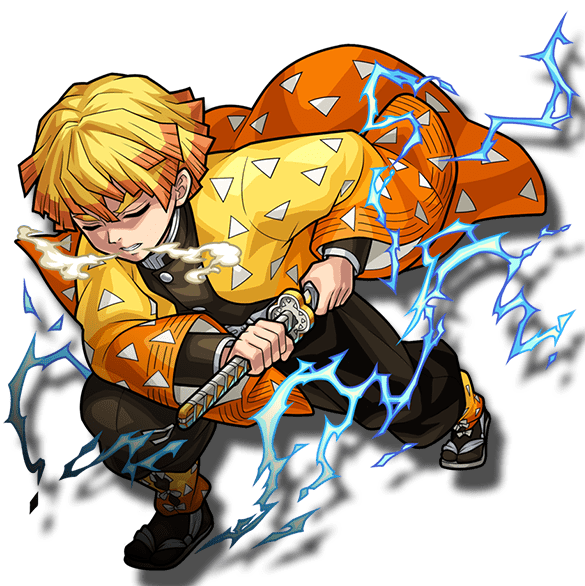
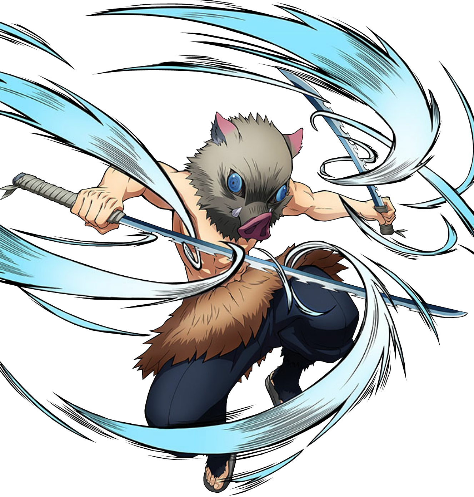

-
tanjiro kamado
01

Descrição
Tanjiro é gentil por natureza e foi descrito por outros como tendo olhos muito gentis. Ele exibe uma grande dose de determinação e não desistirá uma vez que tenha uma meta a alcançar; o melhor exemplo disso é sua busca incansável para encontrar uma cura para Nezuko.
-
Zenitsu Agatsuma
02
Descrição
Zenitsu é um companheiro de viagem e amigo de Tanjiro Kamado, Zenitsu é um jovem de pele clara e olhos de aparência assustada e inclinados para baixo, que desbotam do marrom suave ao dourado.
-
Inosuke Hashibira
03
Descrição
Inosuke é um jovem extremamente temperamental e orgulhoso que sempre gosta de pensar que é o lutador mais forte em uma situação, desafiando constantemente a maioria das pessoas que ele encontra e querendo que os outros o respeitem e o elogiem por sua habilidade.